Creando un Mapa¶
Con frecuencia se necesita crear un mapa que se pueda ser impreso o publicado. QGIS tiene una poderosa herramienta llamada :guilabel: Compositor de Impresión que le permite tomar sus capas de SIG y empaquetarlas para crear mapas.
Resumen de la Tarea¶
El tutorial se muestra cómo crear un mapa de Japón con elementos estándares de mapa tales como la flecha de norte, la barra de escala, la leyenda y etiquetas.
Obtener los Datos¶
Vamos a utilizar el conjunto de datos “Natural Earth” específicamente el “Natural Earth Quick Start Kit” que se incluye con capas globales bellamente decoradas que se pueden ser cargadas directamente en QGIS.
Descargue el Natural Earth Quickstart Kit.
Fuente de Datos [NATURALEARTH]
Procedimiento¶
Descargue y extraiga los datos del “Natural Earth Quick Start Kit”. QGIS Abrir. Haga click en: menuselection: Archivo -> Abrir proyecto.

Ubique la carpeta donde extrajo el conjunto de datos de “Natural Earth”. Allí usted debería encontrar un archivo llamado Natural_Earth_quick_start_for_QGIS.qgs. Este es el archivo del proyecto que contiene las capas con estilos ya creados con el formato de documento de QGIS. Haga click en Abrir.

Usted podrá ver una serie de capas en la tabla de contenido y un mapa del mundo con estilos en la pantalla de QGIS. Si ve notificaciones de error desplegadas en la parte superior, haga clic en la cruz para cerrarlas.
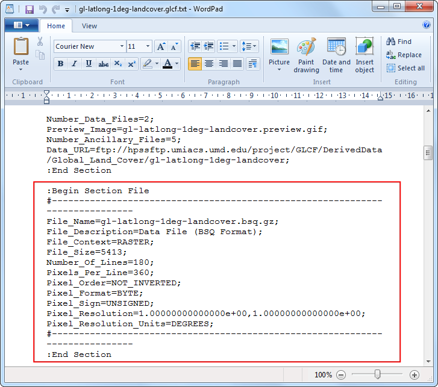
En este tutorial vamos a hacer un mapa de Japón. Haga clic en el botón Acercar y dibuje un rectángulo alrededor de Japón para ampliar a la zona.

Una vez el mapa esté centrado en el área de interés, haga click en el botón Nuevo Diseñador de Impresiones. También es accesible a través de Proyecto ‣ Nuevo Diseñador de Impresiones.
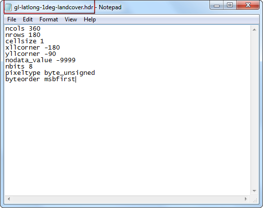
Aparecerá una ventana donde se le preguntará el título para la creación del mapa. Ingrese “mapa de japón” y haga click en Ok.
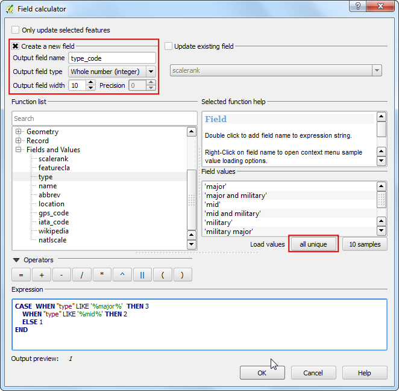
En la ventana del compositor de impresión haga click en Zoom full para despleguar la extensión completa del mapa.
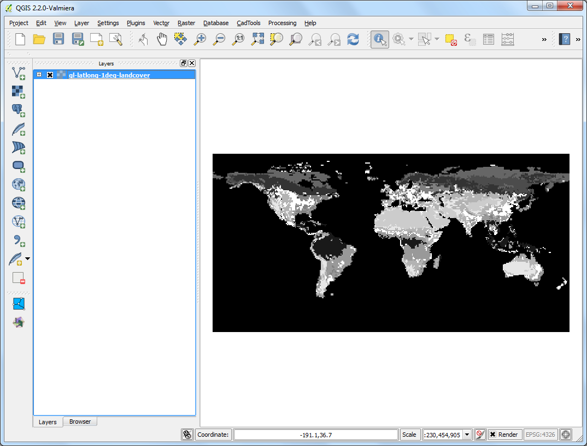
- Now we would have to bring the map view that we see in the QGIS Canvas to this layer. Click on the Add Map button. This tool can also be access from Layout ‣ Add Map.

- Once the Add Map button is active, hold the left mouse button and drag a rectangle where you want to insert the map.

- You will see that the rectangle window will be rendered with the map from the main QGIS canvas. Since we want our map to be covering the full extent of the layout, drag the corners of the rectangle to the edges.

- Let us adjust the zoom level for the given map. Click on the Item Properties tab and enter 3500000 for Scale value.

- Now we will add a North Arrow to the map. Print Composer comes with a nice collection of map-related images - including many types of North Arrows. Click Layout ‣ Add Image.

- Holding your left mouse button, draw a rectangle on the top-right corner of the map canvas.

- On the right-hand panel, click on the Item Properties tab and expand the Search directories section and select the North Arrow image of your liking.

- Next, scroll down below and un-check the Background option. This will make the image transparent.

- Now we will add a scale bar. Click on Layout ‣ Add Scalebar.
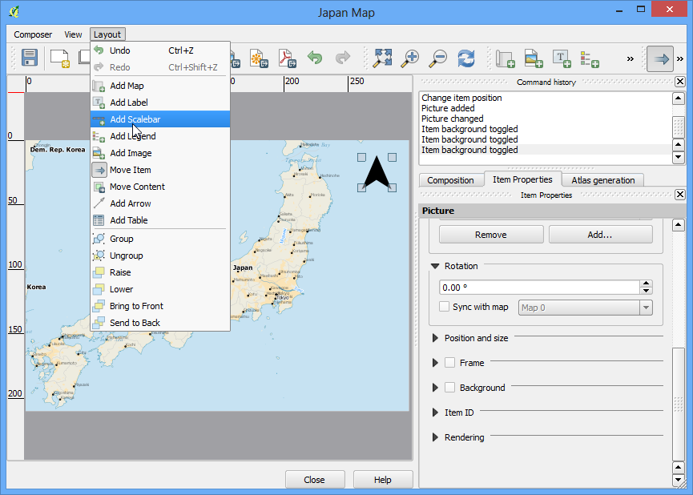
- Click on the layout where you want the scalebar to appear. From the Item Properties tab, choose the Style that fit your requirement. Also change the units to be Map units and label it ‘Degree’ since the map units are degress. You should also set the transparency by un-cecking the Background option.
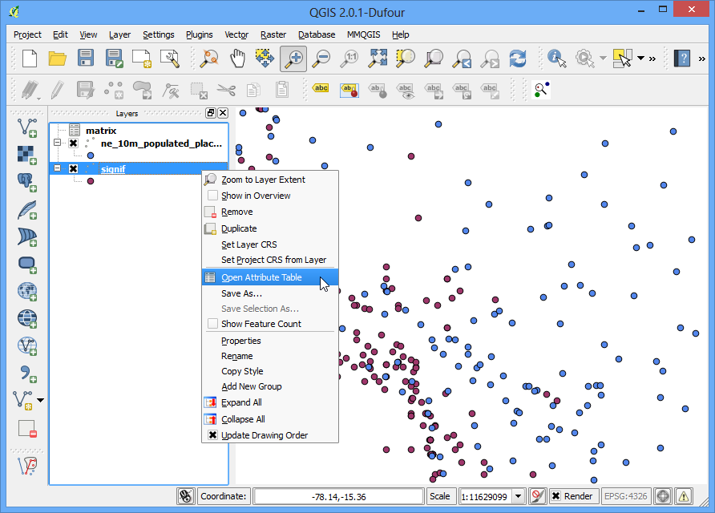
- Now we will add a legend to the map. Click on Layout ‣ Add Legend.
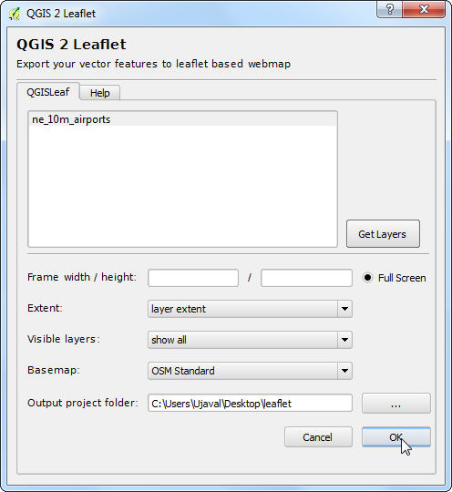
- Click on the layout where you want the legend to appear. Since our layer list is huge, you will see a big box with all the layers appear.
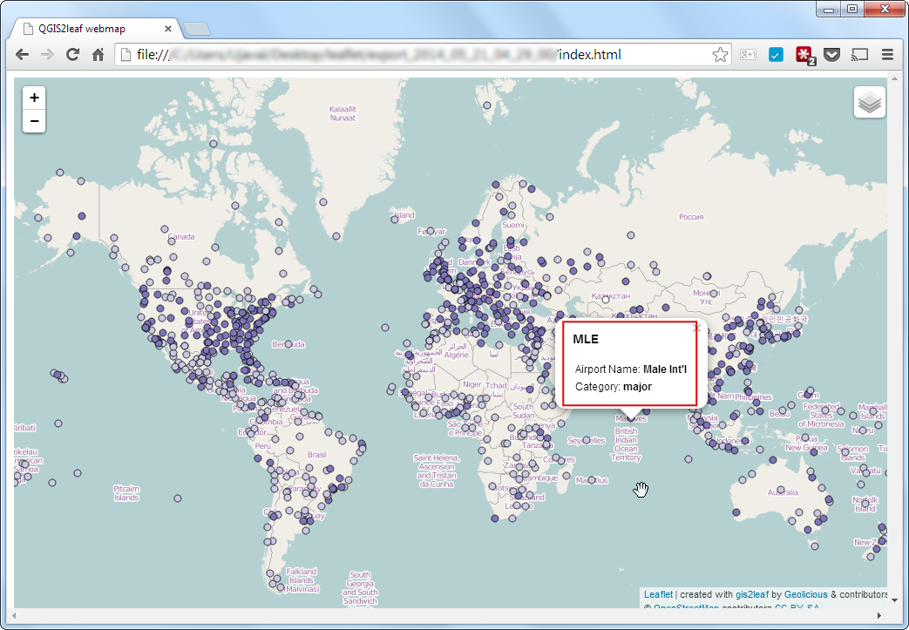
- Click on the Item Properties tab and select the layers which we do not want in the legend. Click the - button to remove it from the legend.

- For the purpose of this map, we will keep legend information only for the five layers as seen below. Click on the Edit button and change the display text for the legend items to be more readable.
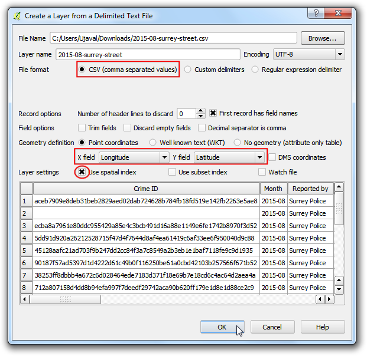
- Now time to label our map. Click on Layout ‣ Add Label.
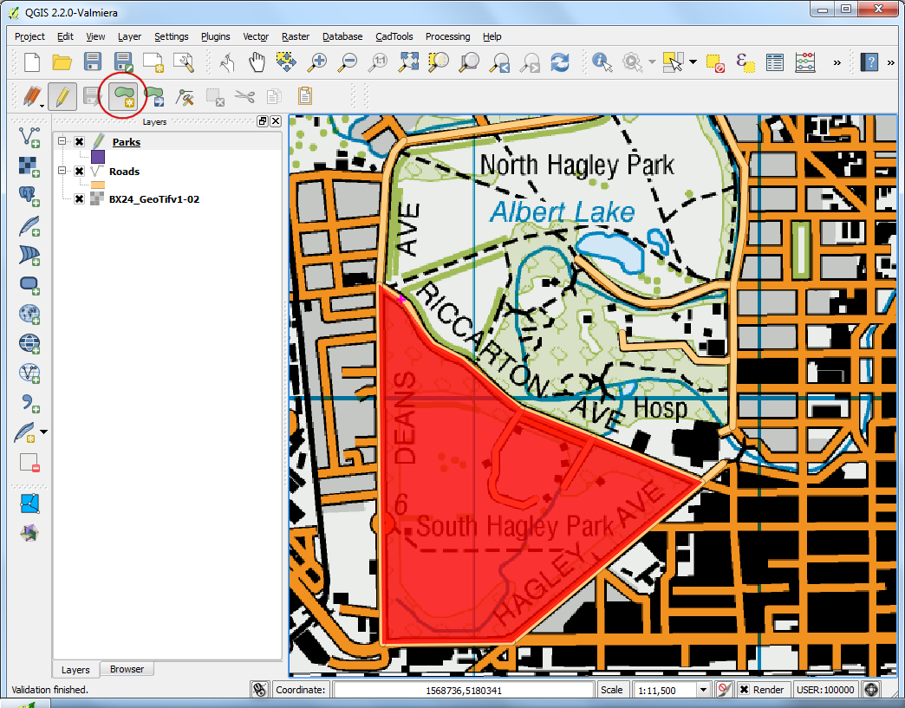
- Click on the map and draw a box where the label should be. In the Item Properties tab, expand the Label section and enter the text. We can enter the text as HTML as well. Check the box Render as Html so the composer will interpret the HTML tags.
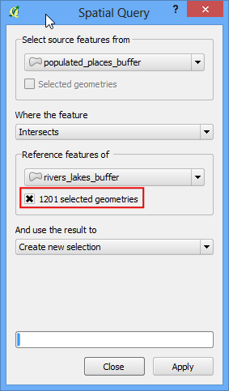
- Once you are satisfied with the map, you can export it as Image, PDF or SVG. For this tutorial, let’s export it as an image.

Guarde la imagen en el formato de su preferencia. A continuación encuentra la imagen PNG exportada